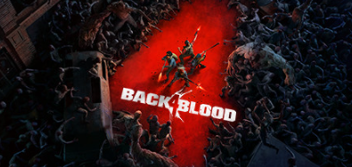

My recreational activities
We all have recreational activities, things we do for leisure. Here are some of mine.
Video games
Video games! Big suprise i know. When it comes to video games i love the ganera of Real Time Strategy (RTS) games, specifically games sutch as: Total Warhammer 1 & 2, Stellaris, Rimworld, Homeworld 1 & 2 and Homeworld deserts of Kharak . I do also enjoy First Pirson Shooter (FPS) games like: Halo reach, ODST and 1-3, Red dead redemtion 1 & 2, Titanfall 1 & 2 . There are also other misc games I enjoy, exampe being: Leauge of Legends and VRchat . Dow below is a table containing some games, how I rank them and some notes.
| Game | descriptions | Raiting | Notes | single or multi |
|---|---|---|---|---|
| Stellaeis is a great game! With about 1000 hours in the game I can safetly say that the replayebilety of the game is great. The gists of the game is that youre an alien race that has just discoverd FTL travle, and now youre ready to claim the stars! How will your galaxy ttur out? A startrek like light future? Or a 40000k like war torn galaxy? Only time will tell. | Stellaris in a nutshell. 10 / 10 will play again. | Too many war crimes | Single player and multiplayer | |
| Rimworld, a colony simulator, radom story generator. This makes it very replayable, and makes no playthrough the same. One playthrough of this game is really long, lasting mutiple real days. the game is quite hard too. With is taking about 300-500 hour to actually complite the games main objective, get of the Rimwolrd. | 10 / 10. One of the best games I've played in a while, the only game better than this being Stellaris. | Again, a lot of war crimes. | Single player, but some modder made it multiplayer compatible. | |
| A prequal to Red dead redemption, This game has you play as Arthur Morgan. As the story unfolds you get to see how the vandelin gang gets torn down, turns on eachoter and eventually disbands. | Again, 10 / 10. This has got to be one of the best story games I've ever played, it's extreamly good and I higely recommend this one. | A very fun time waster. | Single player and multiplayer. | |
| I don't think I have to indroduce this one, every pirson on earth has heard about this game. | 5 / 10 it's a fun game to play with friend, vut alone not so mutch. | An extremely toxic community is centerd arround this game. | multiplayer | |
| A game where you can mess arround and have fun with other players, be it simply chatting or playing games like uno, murder mystery and more. | 7 / 10 a life saver during the quarantine. | You dont actually need VR to play this, it works fine on desktop too. | multiplayer. | |
|  | A spiritual reboot of the well know left 4 dead series. What can I say, you and your mates get to slaughter hords of the undead. | 6 / 10. Fun especially with friends, but it doesn't beat left 4 dead 1 or 2. | Unexpectedly hard game. | Single player and multiplayer. |
Movies and shows!
In this part of the dockument you can read about shows that I like and a little about the plot of those shows
- Battlestar Galactica
- Battlestar Galactica continued from the 2003 miniseries to chronicle the journey of the last surviving humans from the Twelve Colonies of Kobol, after their nuclear annihilation by the Cylons.
- The Expanse
- The Expanse follows the case of a missing young woman who brings a hardened detective and a rogue ship's captain together in a race across the solar system to expose the greatest conspiracy in human history.
- Star Trek
- Star Trek: The Next Generation (TNG) focuses on the 24th century adventures of Captain Jean-Luc Picard aboard the U.S.S. Enterprise (NCC-1701-D). This incarnation of the famous starship is much larger than the one captained by James T. Speking of which, the og Star Trek (1968) is also pritty good.
- Star Wars the prequel trilogy
- It primarily focuses on a young Darth Vader, then Jedi Anakin Skywalker, and an accompanying Obi-Wan Kenobi and the story of how they went from being friends to enemies and the tragedy of Anakin's descent into the dark side, as well as the origin of how the Galactic Republic became the Galactic Empire.
- The Mandalorian
- After the stories of Jango and Boba Fett, another warrior emerges in the Star Wars universe. The Mandalorian is set after the fall of the Empire and before the emergence of the First Order. We follow the travails of a lone gunfighter in the outer reaches of the galaxy far from the authority of the New Republic.
Miscellaneous activities
Here are some miscellaneous things I enjoy doing in my spare time. Hanging out with friends, a fun day/night with the boys allways helps lyft the mood. Listen to music or practice my guitar, as of now I only have an guitar. However I do plan on gett ing an electric 8 string, that way i can play both Rock and Djent. When it comes to the type of music I enjoy to listen to, it veries. I usually find my self listening to mostly Rock, instrumental Metal or Djent, but I do listen to pretty much whatever I think sounds good. Codeing, be it C++, C# or HTML, any language works just fine!